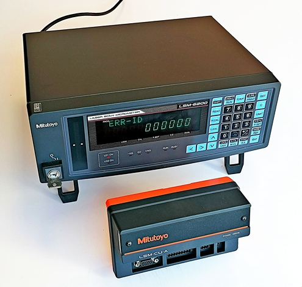
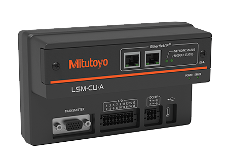
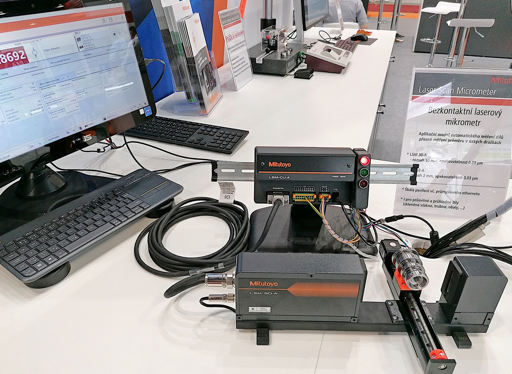

Nová řada bezkontaktních laserových mikrometrů a jejich použití.
Laserové Skenovací Mikrometry (LSM) má firma Mitutoyo ve svém produktovém portfoliu již několik let. Jedná se o bezkontaktní měřící systém, kdy je měřený díl umístěn ve svazku rovnoběžných laserových paprsků procházejících mezi vysílací a přijímací jednotkou. Zařízení měří šířku osvětlených a zastíněných polí (může jich být i více najednou) a na základě toho stanovuje rozměr.
Uvedený systém má několik zásadních předností:
- je bezkontaktní
- je velmi rychlý (zhruba 1000 skenů(měření)/sec)
- je velmi přesný - rozlišení pod 0,01 µm, přesnost ~ 1 µm, dle rozsahu
- je celkem nezávislý na prostředí, může být nasazen i v průmyslových podmínkách
- jedním měřením lze zjistit i více rozměrů. To se týká samozřejmě dílů, kde při vhodném polohování existuje více zón světlo/stín. Jedná se o díly typu mřížka či hřeben, např. vývody integrovaných obvodů.
K systému existovalo 5 velikostí laserových jednotek s rozsahy od 2 mm až do 160 mm. Měřený rozměr se může pohybovat od 0,1 mm (pro jednotku 2 mm). V souvislosti s dosahovanou přesností platí obecné metrologické pravidlo, že chyba je úměrná rozsahu a tedy s rostoucím rozsahem roste i chyba měření
Inovovaný systém LSM-CU-A
Od roku 2024 je na trhu dostupný výrazně inovovaný systém LSM se dvěma laserovými jednotkami o rozsahu 0,005 - 2 mm (LSM-02-A, 544-123) nebo 0,3 - 30 mm (LSM-30-A, 544-124), kde hlavními rozdíly proti předchozímu systému jsou:
- výrazné zmenšení vyhodnocovací jednoty
- zaměření celku na průmyslové nasazení (včetně požití i jako OEM systém)
- možnost montáže vyhodnocovací jednotky na DIN lištu (vodorovně i svisle)
- možnost komunikace s použitím průmyslového ethernetu (Profinet, EtherCat, Ethernet/IP)
- zvýšená přesnost celku proti předchozímu systému
- zvýšená rychlost skenování na 3200 vzorků/sec
Existuje ještě jeden významný rozdíl mezi novu a starou jednotkou, a to, že nová jednotka nemá žádný displej a žádné ovládací prvky. Má jen dvě signalizační LED pro indikaci napájení 24 V a chybového stavu (včetně stavu "žádný díl"). Počítá se s tím, že toto "průmyslové zařízení" bude zabudováno například někde v rozvaděči a zobrazení a ovládání bude realizováno vzdáleně. Základním rozhraním každé jednotky je USB, které je v režimu CDC device, tady díky driveru e na počítači jeví jako virtuálni COM port (VCP), přes který lze s jednotkou komunikovat jako se sériovým rozhraním s použitím definovaných ASCII příkazů.
Důležité je také to, že celé zařízení svým provedením a funkčností zapadá do jednotného konceptu s dříve uvedenou řadou nových lineárních snímačů a jejich jednotek.


Porovnání velikosti staré a nové vyhodnocovací jednotky. Na obrázku vpravo jednotka s vloženou síťovou kartou Ethernet/IP (výměnná lišta nahoře s nápisem Mitutoyo). Standardní USB konektor je ve výřezu vpravo dole.
Příklad použití

Zde na snímku z veletrhu MSV Brno 2024 je vidět malá funkční demo aplikace pro měření průměrů v hlubokých a úzkých drážkách. Díl je automaticky polohován na příčném vedení pomocí malého krokového motoru tak, aby byly postupně měřeny 4 různé průměry v hlubokých drážkách.
Měřená hodnota je zobrazována na displeji kompaktního all in one počítači nalevo. Zde je vidět aplikace, kterou Mitutoyo zdarma poskytuje k LSM. Pomocí ní je možné provádět kompletní kalibraci LSM i nastavení parametrů a všech předdefinovaných úloh v řídící jednotce.
Vyhodnocovací jednotka je vybavena jednoduchým digitálním IO rozhraním (větší zelený konektor), které lze propojit s PLC nebo jiným řídícím systémem. K dispozici jsou mj. tři výstupy tolerančního vyhodnocení, které jsou na obrázku pro předvedení funkce propojeny se LED signalizačním panelem.
Komunikace s počítačem
Použití virtuálího sériového portu (VCP) na reálném USB výstupu je totožné s rešení použitým u komunikačních jednotek EJ counterů a je dostatečně podrobně popsáno zde.
Komunikační příkazy
Všechny příkazy pro komunikaci jsou popsány v manuálu v kapitole USB communication format ve formátu data a odpověď..
PŘÍKLAD:
Požadavek na čtení hodnoty: PMEAS,1000,R{CR}{LF}
| 1000 | adresa jednotky. U tothoto typu připojení vždy 1000. | R | Single Run běh, tj. požadavek na čtení jediné hodnoty v aktuálním okamžiku. |
Odpověď: P00,-NG,7.98055{CR}{LF}
| P00: | Návěstí. P na místě prvního znaku znamená korektní (no error) odpověď na příkaz Pxxx |
| -NG | Výsledek tolerančního vyhodnocení: -NG. Tato položka je přítomna pouze v případě, že je pro daný program nastaveno poskytování výsledků tolerančního vyhodnocení. |
| 7.98055 | hodnota |
DŮLEŽITÁ POZNÁMKA:
Na rozdíl od komunikační jednotky EJ-counterů je u LSM třeba provést v úvodu komunikace s jednotkou její určité počáteční nastavení. To je důležité mít na paměti, pokud budete předchozí příklad zkoušet ze sériového terminálu nebo ze svého programu. Více o počátečním nastavení v následujícím textu.
Reálná úloha
▪ Počáteční nastavení
Spouští se na jednorázově začátku po spustění programu. Nastavuje parametry LSM včetně způvobu vydávání hodnot.
| Popis | Požadavek | Odpověď |
|---|---|---|
| Output condition: enabled, each value | SCOND,1000,PRC,1{CR}{LF} | SCOND,1000,PRC,1{CR}{LF} |
| Output timing> 1 sec after data valid | SCOND,1000,PRT,1{CR}{LF} | SCOND,1000,PRT,1{CR}{LF} |
▪ Měření
Hlavní úloha, provádí se opakovaně v nepřetržitém cyklu.
DŮLEŽITÉ: frekvence opakování by neměla být větší než jeden pracovní cyklus LSM, ve kterém se provádí více měření, které se průměrují do konečného výsledku odeslaného na rozhraní. Pokud se např. průměruje 1024 hodnot, tak to při pracovní fekvenci 3200 scan/sec znamená, že vzorkovací perioda by měla být cca 350 ms nebo větší. Přijde li požadavek na měření v okamžiku, kdy předchozí měření není dokončeno, jednotka vrátí chybová odpověď. Počet průměrovaných skenů v jednom měření je nastavitelný.
| Popis | Požadavek | Odpověď |
|---|---|---|
| Read value (once) | PMEAS,1000,R{CR}{LF} | P00,7.98055{CR}{LF} |
00 v první položce vrácené hodnoty (P00) znamená číslo aktuálního programu (= uložený set nastavení podmínek měření příp. tolerančního vyhodnocení číslo 00).
Pokud prvním znakem vrácené odpovědi není P (např. 4MEAS,1000,R), jedná se o odpověď na chybový stav, např. nepřítomný díl.
▪ Informace o stavu (doplňkové)
Doplňkově je možné získat (nastavit) data souvisící se stavem a pracovním režimem zařízení atd. Celková škála příkazů je velmi rozsáhlé, viz. dokumentace.
| Popis | Požadavek | Odpověď |
|---|---|---|
| Get status | GSTS,1000,A{CR}{LF} | 0STS,1000,A,P00,7.98070,1025,0,1024{CR}{LF} |
| Get calibration H | GCAL,1000,H{CR}{LF} | 0CAL,1000,H,30.00800{CR}{LF} | Get calibration L | GCAL,1000,L{CR}{LF} | 0CAL,1000,L,0.98300{CR}{LF} |
Vrací se následující seznam položek oddělených čárkou:
■command response (0STS), ■device number (1000), ■"A", ▪ program number, ■value [mm], ■status (1025 = calibrated + measuring), ■error status (0 = no error), ■samples count in one measuremnnt.